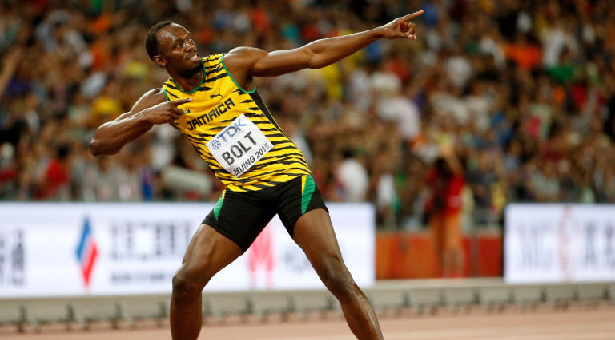
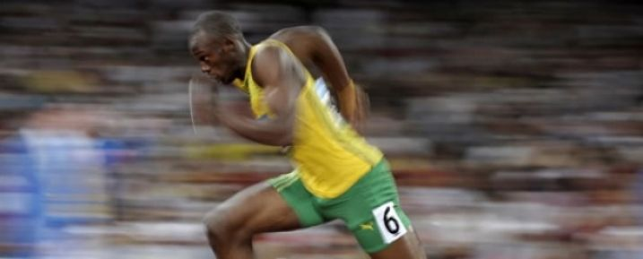
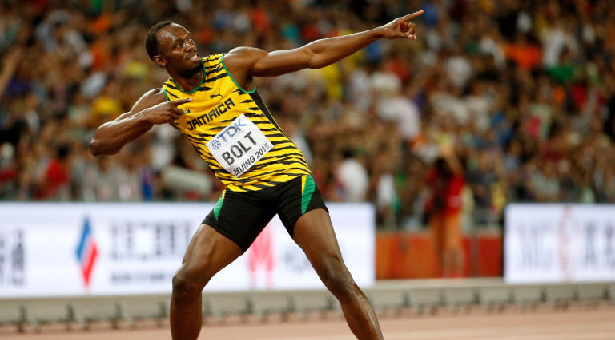
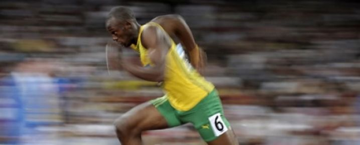

His achievements*
 |
 |  |
 |
|---|---|---|---|
| 8x Olympic Gold Medal | 11x World Championships | 19x Guinness World Record | Fastest Man Alive |
* As of 01/05/2022
Usain St. Leo Bolt,(born 21 August 1986) is a retired Jamaican sprinter, widely considered to be the greatest sprinter of all time. He is the world record holder in the 100 metres, 200 metres, and 4 × 100 metres relay. An eight-time Olympic gold medallist, Bolt is the only sprinter to win Olympic 100 m and 200 m titles at three consecutive Olympics (2008, 2012, and 2016). He also won two 4 × 100 relay gold medals. He gained worldwide fame for his double sprint victory in world record times at the 2008 Beijing Olympics, which made him the first person to hold both records since fully automatic time became mandatory. An eleven-time World Champion, he won consecutive World Championship 100 m, 200 m and 4 × 100 metres relay gold medals from 2009 to 2015, with the exception of a 100 m false start in 2011. He is the most successful male athlete of the World Championships. Bolt is the first athlete to win four World Championship titles in the 200 m and is one of the most successful in the 100 m with three titles. Bolt improved upon his second 100 m world record of 9.69 with 9.58 seconds in 2009 – the biggest improvement since the start of electronic timing. He has twice broken the 200 metres world record, setting 19.30 in 2008 and 19.19 in 2009. He has helped Jamaica to three 4 × 100 metres relay world records, with the current record being 36.84 seconds set in 2012. Bolt's most successful event is the 200 m, with three Olympic and four World titles. The 2008 Olympics was his international debut over 100 m; he had earlier won numerous 200 m medals (including 2007 World Championship silver) and held the world under-20 and world under-18 records for the event until being surpassed by Erriyon Knighton in 2021. His achievements as a sprinter have earned him the media nickname "Lightning Bolt", and his awards include the IAAF World Athlete of the Year, Track & Field Athlete of the Year, BBC Overseas Sports Personality of the Year (three times), and Laureus World Sportsman of the Year (four times). Bolt was included in Time magazine's 100 Most Influential People of 2016. Bolt retired after the 2017 World Championships, when he finished third in his last solo 100 m race, opted out of the 200 m, and pulled up injured in the 4×100 m relay final.
|
 | |
 |
|---|---|---|---|
| 8x Olympic Gold Medal | 11x World Championships | 19x Guinness World Record | Fastest Man Alive |
* As of 01/05/2022